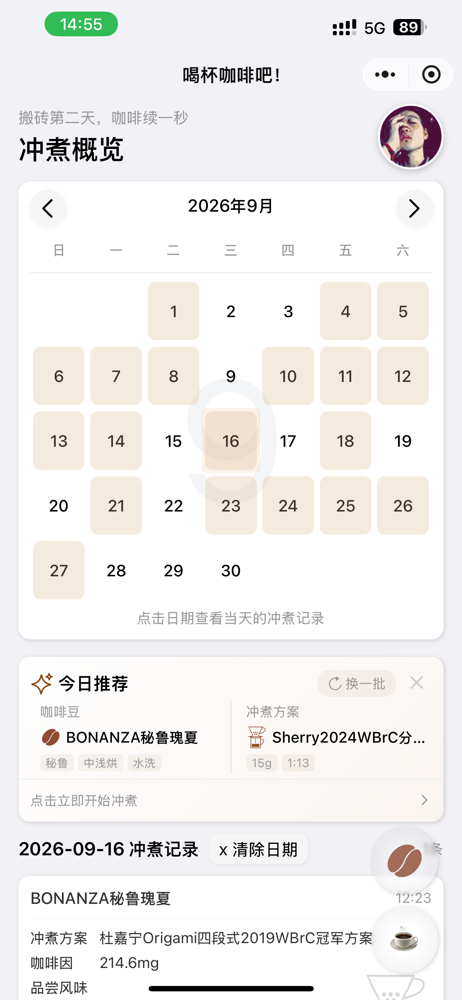
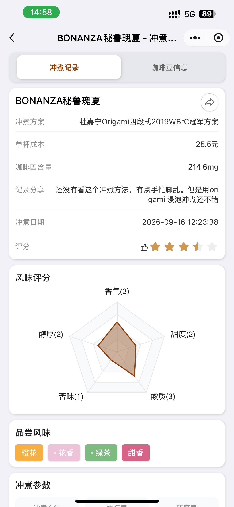
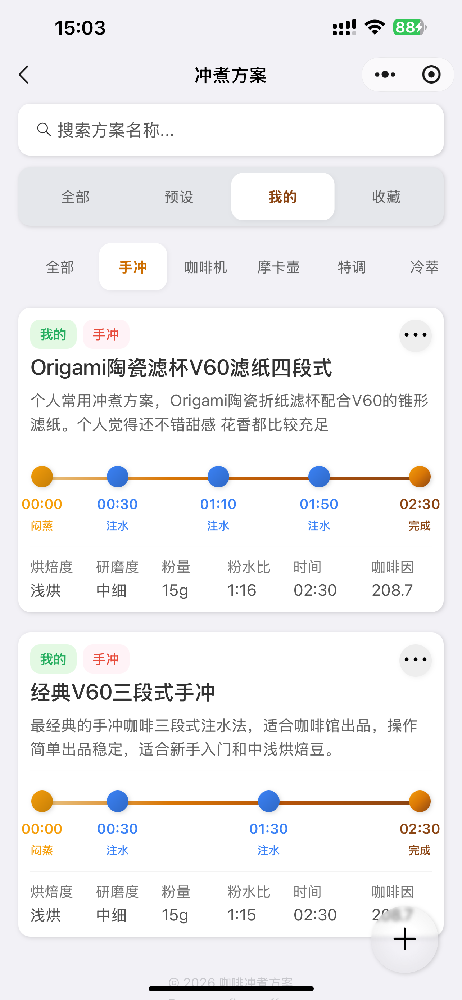

<!-- recipe: phone01-trio-labeled.part.html | source: p32 | 多屏并陈页 · 三壳标签版 -->
<div class="p-page" data-artwork data-size="1080x1440" data-recipe="R-phone-01">
<div class="grain" data-decoration></div><div class="wash" data-decoration></div>
<header class="page-header"><div class="brand" data-layer="brand" data-group><span class="seal" data-layer="brand-seal" data-editable="text" data-from="brand-seal">A1</span><div><div class="nm" data-layer="brand-name" data-editable="text" data-from="brand-name">A1 受控回归</div><div class="tg" data-layer="brand-tag" data-editable="text" data-from="brand-tag">这是一段占位说明，用于核对折行密度</div></div></div></header>
<div class="region heading" data-region="head"><p class="kicker" data-component="kicker" data-layer="topic" data-group data-editable="text" data-from="topic-proof">主题行</p><h1 class="h1" data-component="h1" data-layer="headline" data-group data-editable="text" data-from="phone-wall-headline"><span class="hl">高亮</span>标题后段</h1><p class="sub" data-component="sub" data-layer="introduction" data-group data-editable="text" data-from="phone-wall-intro">这是一段占位说明，用于核对折行密度</p></div>
<main class="body"><div class="region grow" data-region="wall"><div class="flow-grid grow g3c"><div class="phone-cell"><div class="phone" data-component="phone" data-layer="overview-evidence" data-group></div><p class="text-block" data-component="text-block" data-layer="overview-evidence-label" data-group data-editable="text" data-from="overview-caption">屏注</p></div><div class="phone-cell"><div class="phone" data-component="phone" data-layer="detail-evidence" data-group></div><p class="text-block" data-component="text-block" data-layer="detail-evidence-label" data-group data-editable="text" data-from="detail-caption">屏注</p></div><div class="phone-cell"><div class="phone" data-component="phone" data-layer="brewlog-evidence" data-group></div><p class="text-block" data-component="text-block" data-layer="brewlog-evidence-label" data-group data-editable="text" data-from="brewlog-caption">屏注</p></div></div></div><div class="region" data-region="bottom"><p class="serif" data-component="serif" data-layer="phone-wall-note" data-group data-editable="text" data-from="phone-wall-boundary">这是一段占位说明，用于核对折行密度</p></div></main>
<footer class="footer"><span data-layer="footer-signature" data-editable="text">这是一段占位说明，用于核对折行密度</span><span class="pageno" data-layer="page-number" data-editable="text" data-numbering></span></footer>

</div>
